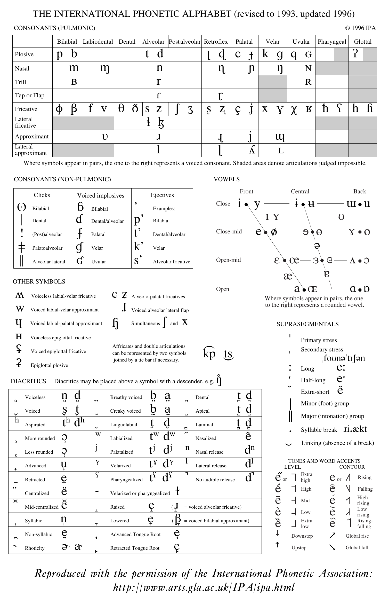

The International Phonetic Alphabet has been developed by the International Phonetic Association as a writing system that can be used to describe the sounds used in speech across languages. This is important because it allows for us to describe sounds accurately based on a number of distinctions used to separate speech sounds in languages. This is shown in the following chart. Click here for an interactive version of the chart which has sound clips attached to the specific letters.
In order for you to use these charts well, it is important for you to understand how they are organized.
First, you will see that for the consonant chart, the columns are organized according to place of articulation (covered in Week 1), moving from the forward-most articulation points to the back-most articulation points. The rows, then, are organized according to manner of articulation (covered in Week 2). However, these are only two of the variables that distinguish sounds from each other. Note that voicing is also shown in this chart through the placement of the symbols to the right or left sides of each cell in the table. If a symbol is placed in the left-side of a cell, that means that that symbol corresponds to a voiceless sound. If a symbol is placed in the right-side of a cell, that symbol corresponds to a voiced sound.
When describing consonant segments, it is typical to describe them in the order of voicing, place of articulation, manner of articulation. If you wanted to describe a [p] sound in English, then, you would say that it is a voiceless bilabial stop. Using these three variables is sufficient to pick out that particular segment in contrast to the other segments. For instance, if you left out the voicing distinction, you could refer to either [p] or [b] with the description bilabial stop. If you left out the placement distinction, you could be referring to either [p] [t] [k] or [ʔ] in English with the description voiceless stop. If you left out the manner distinction, you could be referring to either [p] or the fricative [ɸ] with the description voiceless bilabial.
When describing vowels, we must use different descriptors to distinguish the different sounds made. Unlike consonants, vowels cannot be as easily described with manner of articulation, place of articulation, and voicing because the tongue does not touch make contact with the roof of the mouth in the same way as consonants, vowels are generally voiced (though some languages do have voiceless vowels), and the tongue's position is rather imprecise in producing vowels (since it does not meet the roof of the mouth at a particular point, producing the same vowel may have slightly different tongue positions depending on the consonant segments around the production of that vowel). In essence, we must use different variable to describe vowels as being distinct from one another.
When describing vowels, we describe them in terms of height, backness, and rounding. Height refers to the proximity of the tongue relative to the roof of the mouth. For instance, [i] in English is a very high vowel (if you produce the segment [i] and then breath in, you can tell that your tongue is close to the roof of your mouth because the air feels cool on your tongue) whereas [a] is a very low vowel (you should be able to tell this by looking at yourself in a mirror. Note how your jaw drops when you produce this segment). Height, then, is shown on the table along the vertical axis, with the higher vowels being placed higher on the table than the low vowels. Backness refers to the approximate location of the tongue's articulation of the vowel relative to the front of the mouth. As with place of articulation for the consonants, the left is assumed to represent the front of the mouth, while the right represents when the tongue is articulating primarily towards the back of the mouth. Finally, vowels are also affected by whether the lips are rounded or unrounded. In English, [i] is clearly an unrounded vowel (why you are supposed to say 'cheese' [tSi:z] for photos) while [u] is a rounded vowel (where the lips are pursed). For vowels in particular, the order that is often used to describe them is height, rounding, backness. In order to describe [i] in comparison to all of the other vowel segments, then, we would say that it is a high, unrounded, front vowel.
Now that you know how to read the charts, you should find it relatively easy to understand the phonetic symbols that will be used in this class. In this class, you will be expected to be able to identify the voicing, manner, and place of articulations for the English consonants, but it is useful to know how to read the chart in case you encounter a phonetic symbol that you do not recognize. Similarly, in the vowel chart, you will be expected to know the height, rounding, and backness of the English vowels, but should find knowing how to read the chart helpful, since you may encounter some symbols that you are not familiar with.
This is an x-ray video that was taken of Ken Stevens. Watch through it once, paying attention to the consonants he produces, and where the tongue goes for those articulations. On your second watch through, pay attention to the vowels, see how some of the vowels are higher or lower than others? You might even want to watch again to notice the velum (at the back of the mouth, above the throat), which is lowered whenever he breathes, but raises whenever he is speaking a non-nasal segment. This video serves as an excellent reminder of how complex speech production really is, even though we often don't give the actual articulation much thought.
If you've ever wondered why English spelling appears so inconsistent—why "tough," "through," and "though" all contain the same letters but sound completely different—you're not alone. The frustration with English orthography is universal, but the explanation lies in understanding a fundamental principle of linguistics: English phonology and orthography do not have a one-to-one correspondence.
To grasp why English spelling seems chaotic, we need to distinguish between two key concepts:
Phonology is the study of how languages organize speech sounds into meaningful categories called phonemes. Think of phonemes as the building blocks of spoken language—the distinct sounds that make words different from one another.
Orthography refers to a language's spelling system. In English, this means our familiar 26-letter alphabet and the rules governing how we arrange these letters to represent words.
The disconnect between these two systems is what creates spelling confusion. While many languages maintain a relatively consistent relationship between sounds and their written representations, English has developed a complex system where the same sound can be spelled multiple ways, and the same spelling can represent different sounds.
English spelling didn't develop in isolation—it's the product of centuries of linguistic evolution and cultural influence. The language originated in Britain among Celtic peoples, but successive invasions and cultural exchanges fundamentally shaped its development.
Old English (roughly 450-1150 CE) emerged from the Germanic languages brought by Anglo-Saxon settlers. This early form of English had its own distinct spelling patterns and sounds.
Middle English (1150-1500 CE) developed after the Norman Conquest of 1066, when French-speaking Normans introduced new vocabulary and spelling conventions. This period, exemplified by works like Chaucer's Canterbury Tales, featured spelling that more closely reflected pronunciation than modern English.
Modern English (1500-present) evolved as the language continued to change, but spelling became increasingly standardized even as pronunciation shifted. The Great Vowel Shift, a major change in how English vowels were pronounced, occurred during this transition, creating many of the sound-spelling mismatches we see today.
The International Phonetic Alphabet (IPA) provides a standardized way to represent speech sounds across languages. In IPA, each symbol corresponds to one specific sound, regardless of how that sound is spelled in any particular language.
Consider the sound represented by the IPA symbol /ʃ/—the "sh" sound. In English, this single sound appears in multiple spelling patterns:
Despite these varied spellings, all these words contain the identical /ʃ/ sound. This demonstrates how English orthography can represent one phoneme through multiple letter combinations.
Various scholars and organizations have proposed spelling reforms throughout English history, arguing for a more logical system that better reflects pronunciation. However, these efforts have largely failed for several practical reasons:
The sheer scope of existing written materials in English makes wholesale changes impractical. Additionally, English serves as a global lingua franca, and coordinating spelling changes across different English-speaking countries would be enormously complex.
Perhaps most importantly, English spelling, despite its inconsistencies, carries historical and etymological information that helps distinguish between words that sound the same but have different meanings and origins.
Understanding why English spelling seems irregular helps us appreciate the language's rich history and ongoing evolution. Rather than viewing spelling inconsistencies as flaws, we can recognize them as evidence of English's dynamic development through contact with other languages and cultures.
This linguistic complexity also explains why English spelling bees are such impressive intellectual competitions—mastering English orthography requires not just memorization, but an understanding of patterns, exceptions, and historical influences.
The next time you encounter an English spelling that seems illogical, remember that you're witnessing the accumulated history of one of the world's most widely spoken languages—a history written in every inconsistent letter combination and unexpected pronunciation.